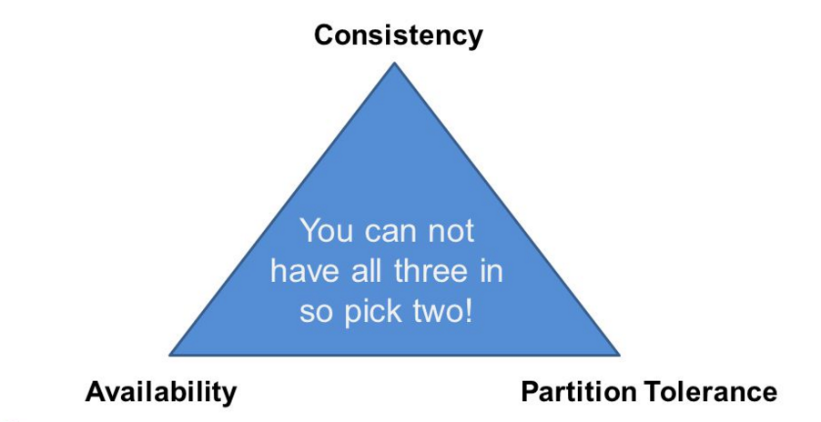

This section describes the Space's leader election mechanism, which is based on the CAP theorem. It also explains how to configure and optimize it.
The CAP theorem, also known as Brewer's theorem, states that it is impossible for a distributed computer system to simultaneously provide all three of the following guarantees:
Consistency (all nodes see the same data at the same time)
Availability (node failures do not prevent survivors from continuing to operate). This is only applicable for Smart Cache.
Partition Tolerance (the system continues to operate despite arbitrary message loss)

As a result, you can have partition tolerance plus consistency, or partition tolerance plus availability. Gigaspaces provides two available implementations to support the approach that is best suited to your environment and business needs.
Consistency based implementation is based on Apache Zookeeper, whereas availability based is based on the native Lookup Service:
Consistency biased - this implementation is based on Apache Zookeeper.
Availability biased - this implementation is based on the native Lookup Service.